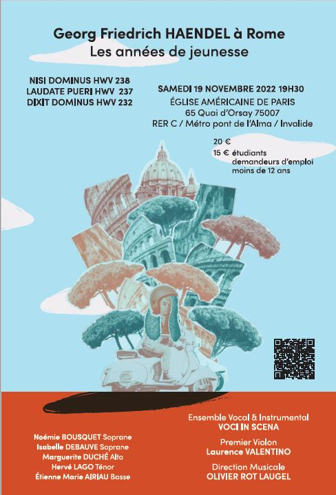
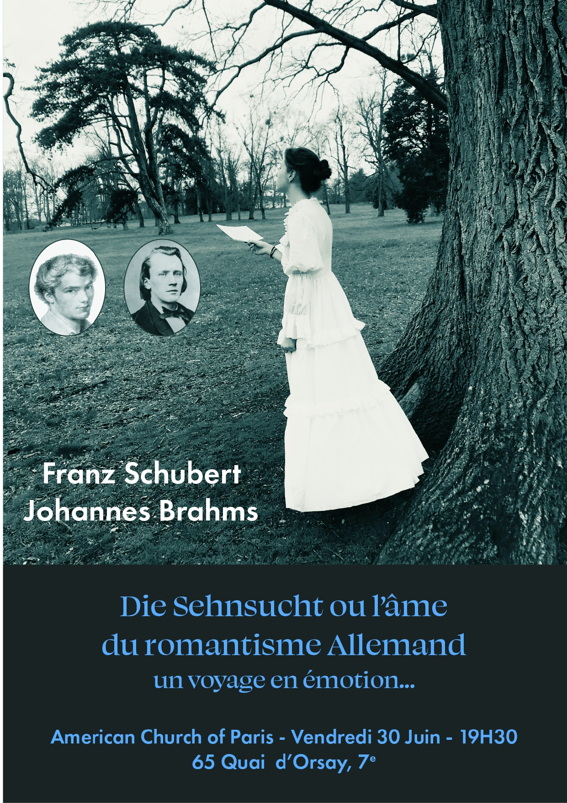

Répertoire
Haydn
Missa in Augustis
TE DEUM

Monteverdi
SCHERZI MUSICALI
Si dolce e'l tormento
MADRIGALI GUERRIERI E AMOROSI
(livres 7 et 8 extraits)
Lamento della ninfa
Dolcissimo uscignolo
Vago Augeletto
Hor che'l ciel e la terra
O come sei gentile
S'el vostro cor madonna
Con che soavita labra
Altri canti d'amor
Ballo Tirsi e Clori

Haendel
DIXIT DOMINUS
LAUDATE PUERI
NISI DOMINUS

Brahms
LIEBESLIEDER
NEUE LIEBESLIEDER
Sehnsucht
Warum
Abendlied
O schöne Nacht
Spätherbst
Geistliches Lied
